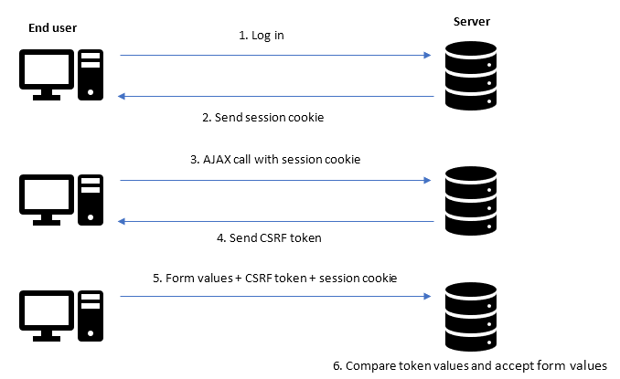
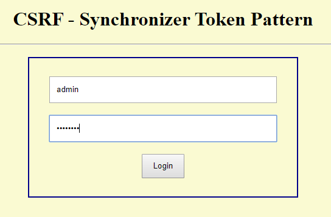
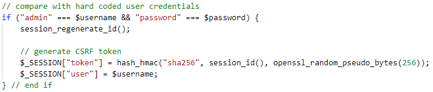
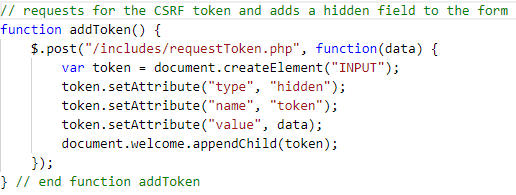
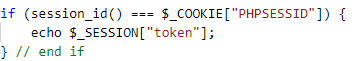
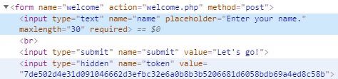
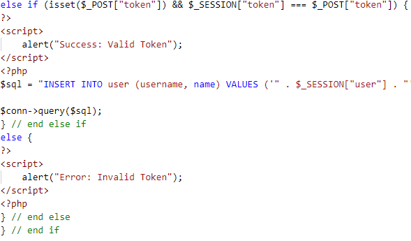
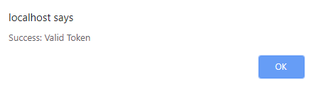
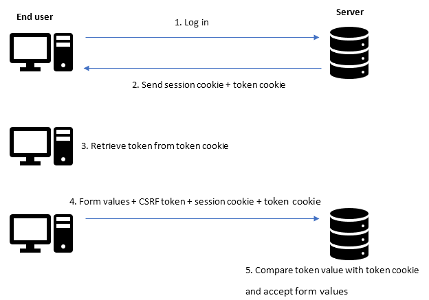
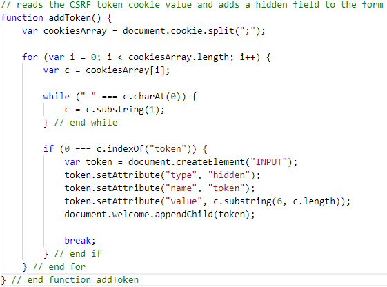

Implementing Cross-site Request Forgery Protection
- Mathanaharan K.
Introduction
Cross-site request forgery (CSRF) is a type of attack where unauthorized actions are carried out on behalf of an end user on a website where the user is currently authenticated. CSRF attacks are carried out to change the state of the user on a website by forging the request. If a website is vulnerable to CSRF attacks, it can be exploited from another domain.
This article focuses on two ways to protect web applications from CSRF attacks. Sample code written in PHP can be downloaded from the links given below and setup instructions are specified in the repositories.
Synchronizer Token Pattern

How it works?
When a user logs in, a session identifier, and a unique secret token which is mapped to the session identifier are created and stored at server. The user opens a web page with a form. On loading the page, the browser makes an AJAX call to the server. Server compares the session cookie with session identifier and sends the CSRF token back. The token value is also included as a hidden field in the form by modifying the document object model of the form using JavaScript. When the server receives form values, it compares the token value received with the stored token value associated with the user’s session identifier and if they match only, it proceeds.
Explanation of the sample code
After the setting up the web application, access the home page. User credentials are hard coded in this web application. Provide (without quotes) username as “admin” and password as “password” to log in.
The request is sent to “includes/login.php” and, a session identifier and a CSRF token are created and stored. The session cookie is sent to the client and the token is stored only in the server. The function “hash_hmac” is used to generate a SHA-256 hash of the session identifier to use as the token. A 256-bit pseudorandom value which is generated using “openssl_random_pseudo_bytes” is used as the key for the hashing process to increase the cryptographic strength of the token.
After the page “index.php” is loaded, an AJAX call is made to “includes/requestToken.php”. The server compares the session identifier with the received session cookie and sends the stored token. Then, the received token is added into the form as a hidden field using JavaScript.
index.php
includes/requestToken.php
Browser
Enter a name into the form and submit. After submitting, a POST request is sent to “welcome.php” with all form values including the token. In the server, the received token is compared with the stored token and if they match, the name is updated in the database. A JavaScript alert message is triggered providing the result of the validation. If the token is valid, we can see the entered name being printed out.
 Double Submit Cookies Pattern

How it works?
When a user logs in, a session identifier, and a unique secret token which is mapped to the session identifier are created by the server and sent as cookies to the client. Only the session identifier is stored in the server. The user opens a web page with a form. On loading the page, the token value is also included as a hidden field in the form by modifying the document object model of the form using JavaScript by retrieving the token value stored as a cookie. When the server receives form values, it compares the token value received with the token cookie and if they match only, it proceeds.
Explanation of the sample code
After the setting up the web application, access the home page. Provide (without quotes) username as “admin” and password as “password” to log in.
The request is sent to “includes/login.php” and, a session identifier and a CSRF token are created. The session cookie and token cookie are sent to the client and the token value is not stored n the server. The same functions explained previously were used to generate the token.
After the page “index.php” is loaded, token value is retrieved by accessing the token cookie using JavaScript. Then, the token is added as a hidden field into the form using JavaScript.
Enter a name into the form and submit. After submitting, a POST request is sent to “welcome.php” with all form values including the token. In the server, the received token is compared with the token cookie and if they match, the name is updated in the database. A JavaScript alert message is triggered providing the result of the validation. If the token is valid, we can see the entered name being printed out.
Conclusion
One of the above methods can be implemented to protect web applications from CSRF attacks. If we open the "attack.html" file in the web browser which uses an auto-submitting form to do a CSRF attack, the above applications will not make the name change as the token is invalid.
Synchronizer token pattern is stateful and double submit cookies pattern is stateless. When using synchronizer token pattern, all the CSRF tokens of all users have to be stored in server which utilizes available space in the server. But when using double submit cookies pattern, token cookie cannot be set as HttpOnly to prevent cross-site scripting attacks as the cookie has to be read by JavaScript to retrieve token value. So, implementing CSRF protection methods with a combination of other security implementations is important.